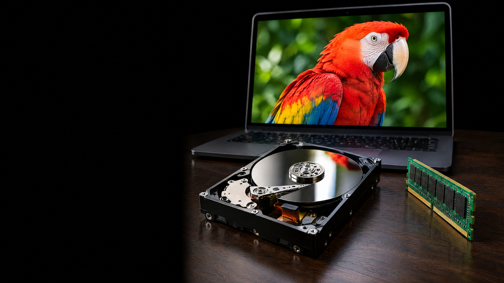

this photo is
196 662 bytes.
where are they
right now?
image: ai-generated (gpt-image-2.5-flare)
the same file, two programs
the bytes do not say what they mean. the program decides how to read them.
78 bytes, all of them
the header says how to read the rest
4 × 2 × 3 = 24 bytes. the program knows that before it has seen a single pixel.
two decisions somebody made in 1990
not cyan, and not the top row. yellow, at the bottom.
how does a program know what it is looking at?
the extension
.bmp, in the name, not in the file.
rename it and the bytes do not change.
magic bytes
BM
at the front, in the file.
png has eight, pdf has
%PDF
. a text file has none.
a type field
your frame, in front of the data.
the class decides which number means which type.
try it: inside a file
what a file is
a sequence of bytes, plus an agreement about how to read it.
the agreement is written down, not natural.
a broken byte in the data is a small injury. in the header it is a large one.
every file on your laptop works this way. yours will too.
a bit that remembers
the same gates that add and compare. wired in a circle, they remember.
millions of them, each with a number
a program never says "the number over there". it says "the byte at 4711".
pull the plug
ram answers in nanoseconds because nothing has to move. that is what it costs.
what is a bit made of here?
five materials, one job: hold a state that stays put, and answer when asked.
a cd reads bits with light
a lamp, a sensor, and a reflection that is there or is not. that is your device, on a spiral.
the medium outlives its reader
a floppy disk holds its bits fine. finding a drive is the problem.
tape is still how archives keep petabytes, for decades.
a state without the agreement that reads it is not information yet.
what saving means
copied, not moved. the same sequence of bytes, in a place that needs no power.
four places, one sequence
the whole way
what this means for challenge 4
read the file as bytes, not as a picture.
send the header too. without it the other side cannot read anything.
"it displays" proves nothing. the hash decides.
and one more: a byte you change in the header costs you the whole file.
a magnetised spot.
that is your photo.
image: ai-generated (gpt-image-2.5-flare)